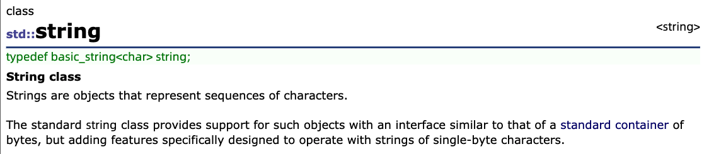
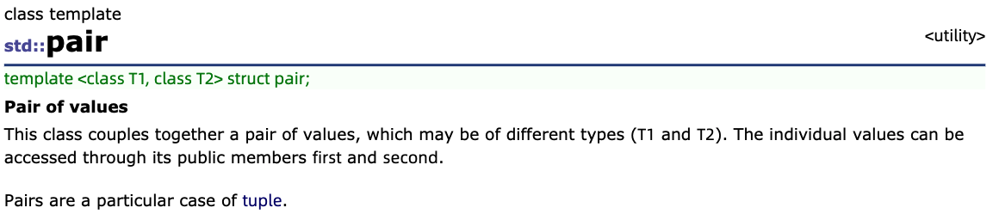

3. data structure(STL)¶
3.1. 概念¶
A data structure is a way to store data in the memory of a computer. It is important to choose an appropriate data structure for a problem, because each data structure has its own advantages and disadvantages. The crucial question is: which operations are efficient in the chosen data structure?
我们来介绍一下C++ standard library。STL(Standard Template Library)，C++ 有一个库，里面有很多好东西。是后来出现的，以前不流行，现在很流行的东西。我们学习了很多数据结构，就是那些用来存储数据的东西。在解决问题的时候，我们会选择合适的数据结构来存储这个问题的数据，是因为每个数据结构有优点和缺点。数据结构的相关操作，有一些函数是写好可以直接用的。（记住，你以后还会面临时间复杂度问题，不是所有情况都适合用 STL ，但是前期 STL 非常香）（C++11 现在在 noip 中还不能使用）
It is a good idea to use the standard library whenever possible, because it will save a lot of time.
3.2. dynamic arrays(vector, string)¶
vector<int> v;
v.push_back(3); // [3]
v.push_back(2); // [3,2]
v.push_back(5); // [3,2,5]
cout << v[0] << "\n"; // 3
cout << v[1] << "\n"; // 2
cout << v[2] << "\n"; // 5
for (int i = 0; i < v.size(); i++) {
cout << v[i] << "\n";
}
vector<int> v;
v.push_back(5);
v.push_back(2);
cout << v.back() << "\n"; // 2
v.pop_back();
cout << v.back() << "\n"; // 5
// size 10, initial value 0
vector<int> v(10);
// size 10, initial value 5
vector<int> v(10, 5);
//vector的排序
sort(v.begin(), v.end());
reverse(v.begin(), v.end());
sort(a, a+n);
reverse(a, a+n);

The string structure is also a dynamic array that can be used almost like a vector. string类 类型也是一个动态数组，用起来很像 vector ，经常用的s.substr(pos, length) int pos = s.find('c')，还有+用来拼接两个 string
string a = "hatti";
string b = a+a;
cout << b << "\n"; // hattihatti
b[5] = ’v’;
cout << b << "\n"; // hattivatti
string c = b.substr(3,4);
cout << c << "\n"; // tiva
string c = b.substr(3);
cout << c << "\n"; // 这个是什么呢，请实践一下
int pos;
pos = b.find('a');
cout << pos << '\n'; //实践一下
pos = b.find('x');
cout << pos << '\n'; //实践一下
//Note: 我们需要用到不同的头文件
#include <vector>
#include <set>
#include <queue>
//总之，可以用万能头
#include <bits/stdc++.h>
3.3. set集合¶
A set is a data structure that maintains a collection of elements. The basic operations of sets are element insertion, search and removal.The benefit of the set structure is that it maintains the order of the elements.
vector 如果要排序，需要 sort 一下； set 就会默认是有序的
set<int> s;
s.insert(3);
s.insert(2);
s.insert(5);
cout << s.count(3) << "\n"; // 1
cout << s.count(4) << "\n"; // 0
s.erase(3);
s.insert(4);
cout << s.count(3) << "\n"; // 0
cout << s.count(4) << "\n"; // 1
set<int> s = {2,5,6,8};
cout << s.size() << "\n"; // 4
for (auto x : s) { //C++11 用法
cout << x << "\n";
}
//set里面，每个元素只存一个
set<int> s;
s.insert(5);
s.insert(5);
s.insert(5);
cout << s.count(5) << "\n"; // 1
//multiset里面，每个元素可以存多个
multiset<int> s;
s.insert(5);
s.insert(5);
s.insert(5);
cout << s.count(5) << "\n"; // 3
//把5这个元素全删了
s.erase(5);
cout << s.count(5) << "\n"; // 0
//只删掉一个5元素
s.erase(s.find(5));
cout << s.count(5) << "\n"; // 2
3.4. map¶
A map is a generalized array that consists of key-value-pairs. While the keys in an ordinary array are always the consecutive integers 0, 1 ,... , n−1, where n is the size of the array, the keys in a map can be of any data type and they do not have to be consecutive values.
map<string,int> m;
m["monkey"] = 4;
m["banana"] = 3;
m["harpsichord"] = 9;
cout << m["banana"] << "\n"; // 3
If the value of a key is requested but the map does not contain it, the key is automatically added to the map with a default value.For example, in the following code, the key ”aybabtu” with value 0 is added to the map.
map<string,int> m;
cout << m["aybabtu"] << "\n"; // 0
所以，上述这个操作，不是很好，当查询次数很多，会造成空间问题（我在 CF 现场比赛中，真实遇见…，当时还不熟练这个操作）
//判断是否存在，用count
if (m.count("aybabtu")) {
// key exists
}
//C++11的遍历，我们自己写，要用interator
for (auto x : m) {
cout << x.first << " " << x.second << "\n";
}
//所以，我想问，能不能 map<int, string>
3.5. pair¶

pair<int, int> A, B;
A = make_pair(1, 2); //比赛中可以用这种写法
//经常的，会这样去用
#include <bits/stdc++.h>
using namespace std;
typedef pair<int, int> PII;
const int N = 110;
PII a[N];
int main()
{
int n;
cin >> n;
for (int i = 0; i < n; i++) cin >> a[i].first >> a[i].second;
return 0;
}
3.6. iterator迭代器¶
Many functions in the C++ standard library operate with iterators. An iterator is a variable that points to an element in a data structure. 用 iterator 来写遍历，遍历不同的容器，都可以用 iterator，但是只有部分容器支持下标访问，比如 vector。
//set的遍历
set<int>::iterator it;
for (it = s.begin(); it != s.end(); it++) {
cout << *it << "\n";
}
//输出最大元素
it = s.end(); it--;
cout << *it << "\n";
//查找元素是否存在
it = s.find(x);
if (it == s.end()) {
//x is not found
}
//示例
//set<pair<int, int> >
//不能写成set<pair<int, int>>，这也是不建议用#define宏定义的原因
#include <bits/stdc++.h>
using namespace std;
typedef pair<int, int> PII;
set<PII> s;
int main()
{
s.insert(make_pair(3, 5));
s.insert(make_pair(7, 9));
s.insert(make_pair(11, 13));
set<PII>::iterator it;
for (it = s.begin(); it != s.end(); it++)
printf("%d %d\n", (*it).first, (*it).second);
return 0;
}
3.7. bitset(这个不着急完全理解)¶
A bitset is an array whose each value is either 0 or 1. For example, the following code creates a bitset that contains 10 elements:
bitset<10> s;
s[1] = 1;
s[3] = 1;
s[4] = 1;
s[7] = 1;
cout << s[4] << "\n"; // 1
cout << s[5] << "\n"; // 0
The benefit of using bitsets is that they require less memory than ordinary arrays, because each element in a bitset only uses one bit of memory. For example, if n bits are stored in an int array, 32n bits of memory will be used, but a corresponding bitset only requires n bits of memory. In addition, the values of a bitset can be efficiently manipulated using bit operators, which makes it possible to optimize algorithms using bit sets.
bitset<10> s(string("0010011010")); // from right to left
cout << s[4] << "\n"; // 1
cout << s[5] << "\n"; // 0
bitset<10> s(string("0010011010"));
cout << s.count() << "\n"; // 4
bitset<10> a(string("0010110110"));
bitset<10> b(string("1011011000"));
cout << (a&b) << "\n"; // 0010010000
cout << (a|b) << "\n"; // 1011111110
cout << (a^b) << "\n"; // 1001101110
3.8. stack栈¶
A stack is a data structure that provides two O(1) time operations: adding an element to the top, and removing an element from the top. It is only possible to access the top element of a stack.
stack<int> s;
s.push(3);
s.push(2);
s.push(5);
cout << s.top(); // 5
s.pop();
cout << s.top(); // 2
3.9. queue队列¶
A queue also provides two O(1) time operations: adding an element to the end of the queue, and removing the first element in the queue. It is only possible to access the first and last element of a queue.
queue<int> q;
q.push(3);
q.push(2);
q.push(5);
cout << q.front(); // 3
q.pop();
cout << q.front(); // 2
3.10. priority_queue优先队列（用来实现堆操作）¶
A priority queue maintains a set of elements. The supported operations are insertion and, depending on the type of the queue, retrieval and removal of either the minimum or maximum element. Insertion and removal take O(log n) time, and retrieval takes O(1) time.
priority_queue<int> q;
q.push(3);
q.push(5);
q.push(7);
q.push(2);
cout << q.top() << "\n"; // 7
q.pop();
cout << q.top() << "\n"; // 5
q.pop();
q.push(6);
cout << q.top() << "\n"; // 6
q.pop();
默认是大根堆，如果要写小根堆，就是push x进去的时候，push成-x，取出使用的时候，加个负号再使用。实现大根堆，还有一个方法，如下：
priority_queue<int,vector<int>,greater<int> >q;//这样就可以实现小根堆了
参考：https://www.cnblogs.com/zwfymqz/p/7800654.html, 如何实现自定义结构体的排序